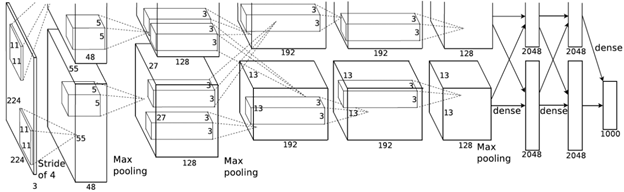
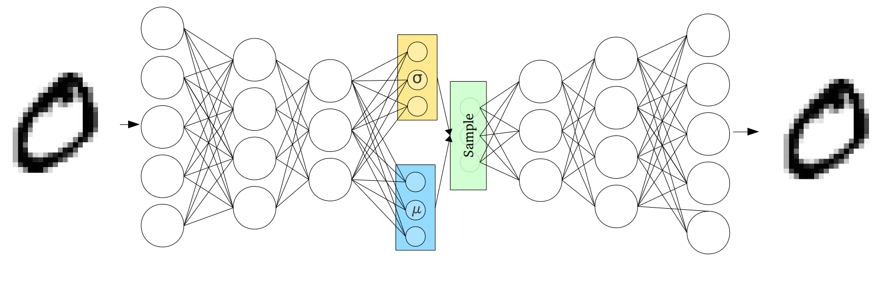
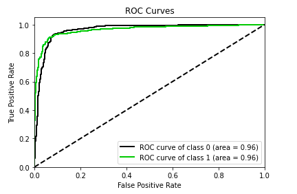

FaceMask Detection

Introduction
The rise of the COVID-19 pandemic has brought about unprecedented changes all around the world. There is currently no treatment or vaccine for coronavirus and our best defense against it is properly wearing a face mask. Unfortunately, it’s been observed that a lot of people do not wear their masks properly thus putting their and other’s life at risk of catching this deadly virus.
Problem
As pandemic fatigue sets in around the country, more and more people are eschewing face mask use. Being able to identify whether a person is properly wearing a mask or not is crucial to identify and prevent a potential outbreak. We propose a face mask detector that can identify whether an individual is wearing a facemask or not.
Data Collection
We are using FaceMask 12K dataset on
kaggle. The dataset is split into 10,000 in training, 992 in test and 800 in validation and has equal representation of both classes.
We are not doing any explicit feature selection on the data. We rely on CNNs and VAE to automatically learn these features while training.
The dataset that we obtained is balanced between the two classes so we are not performing any explicit data cleaning.
Methods
We propose the use of Convolutional Neural Networks to tackle the problem. We model the problem as a binary classification task, where individuals wearing a mask pertain to positive class and individuals not wearing a mask pertain to negative class. We choose Pytorch as our preferred framework to develop the project. We use both supervised learning and unsupervised learning methods to achieve the mentioned goal. We have also implemented grad-cam to visulaize what our model is learning. Details of all these approaches are discussed below.
Supervised Learning
We have developed deep neural networks to perform the binary classification task using various off the shelf models.
Architectures
Resnet
ResNet is a Convolutional Neural Network model. The major problem that ResNet addresses is how it is not just important to have multiple layers stacked to get better results. In fact, having deep layers gives rise to the vanishing gradient problem and also the accuracy gets saturated and later would degrade. ResNet introduces a residual learning block where an identity mapping is added at the end of the block to solve the degradation problem as follows:

The hypothesis is that instead of expecting the stacked layer to fit the desired mapping function, an identity mapping is used to let it fit the residual mapping which makes it easier to reduce the error towards zero. This is achieved by introducing shortcut connections between the stacked layers to add the identity mapping. The assumption is that the identity mappings do not introduce additional parameters. It is shown that with this approach, error is reduced with deeper layers:
Efficient Net
EfficientNet is a new technique achieving state-of-the-art image classification accuracy from Google AI research. This technique rethinks the way we scale convolutional neural networks. Traditionally, one way to scale up CNN is to add more layers, for example, ResNet18 to ResNet 200. In EfficenetNet, this is done systematically which looks at three properties, width, depth and_resolution. Width scaling captures fine-grained features by adding more feature maps; depth scaling adds more layers to the CNN and finally resolution scaling is changing the size of the input image. Scaling any of these will improve performance but it quickly plateaus as the images below shows. 
Left is width scaling, middle is depth scaling, and then far right is image resolution scaling, hence performance is gained on each but it quickly saturates. The authors then discovered that there is a synergy in scaling multiple dimensions together. Meaning if you increase depth you will also see a performance boost when you increase image resolution as well. So there is a dependency amongst scaling each of these dimensions.
After extensive grid search, they derived the theoretically optimal formula for compound scaling using these coefficients. Compound scaling method is the key idea in EfficenetNet which balances the up sampling with Width, Depth and Resolution by scaling with a constant ratio.
Alexnet
AlexNet architecture was proposed by Alex Krizhevsky, Illya Sutskever and Geoffrey E. Hinton, and became popular in 2012 after competing and won in the ImageNet Large Scale Visual Recognition Challenge in achieving top-5 error of 15.3%. Getting these rates of accuracy was quite rare at the time and it is what ignited CNN into the mainstream. AlexNet has five convolution layers some of which follow a max-pooling layer and finally three fully connected layers. This architecture also popularized ReLU activation function which improved training performance over Tanh and Sigmoid, and used dropout instead of other methods of regularization to avoid overfitting.

GoogleNet
GoogLeNet was the winner of ImageNet Large Scale Visual Recognition Challenge of 2014 that focused on efficient computation and deeper networks while achieving higher accuracy. This network is 22-layer deep with 27 pooling layers. The key component is the 9 inception modules stacked linearly followed by an average pooling layer connected to the end of the inception modules. The Inception module is simply the concatenation across 3 convolutions, scales a 1 x 1 convolution, a 3 x 3 convolution, a 5 x 5 convolution and a 3 x 3 max pooling. One of the benefits of using multiple web convolutions on a single patch is that visual information is being processed at several scales then aggregated. Hence, inception modules give us the knobs and levers of controlled balancing of computer resources and speed.
Optimizers:
We experimented with the following optimizers to train our network:
- Adam
- Stochastic Gradient Descent
- ADADELTA
- Average Stochastic Gradient Descent
Unsupervised Learning
For unsupervised learning, we used Variational Autoencoder. Specifically, we aim to use Autoencoders for Dimensionality Reduction and map the input observations from a high-dimensional feature space to a low-dimensional feature space without significant information loss. Since autoencoders can capture the non-linear relations between the features, they are a powerful tool to detect subtleties in the input and therefore helps to augment the dataset. This way we can increase the overall training accuracy of our classification task. We will first describe a general training procedure for an autoencoder and then extend it to variational autoencoder in the next section. Training a autoencoder is two step process:
- Unsupervised Training: In this step we take an autoencoder, which is essentially a combination of an encoder and a decoder. The loss is defined by L2 loss which is also called reconstruction loss in this setting. We then pass the images through the autoencoder to minimize the reconstruction loss.
- Supervised Training: After the autoencoder is trained to minimize the reconstruction loss, we throw away the decoder and hope that the latent representation (z) has effectively compressed the crucial information of an image.
Then we finetune the obtained encoder for our binary classification downstream task. - Variational Autoencoders: Variational autoencoders work in a similar fashion as an autoencoder. The difference is that in variational autoencoders instead of sampling a static latent representation z we sample two vectors, μ and σ, which reprensents mean and standard deviation. Then we use μ and σ to sample a new latent vector z from the gaussian distribtion.

Loss function is also modified to account for KL divergence along with reconstruction loss. - Architecture specifications of our VAE model:
- The encoder has 5, 2d Convolution layers with kernel size 3, stride 2 and padding 1.
- The decoder has 5, 2d Convolution layers with kernel size 3, stride 2 and padding 1.
- LeakyReLu is used as the activation function after every hidden layer along with a batch normalization layer.
Visualization
Grad-Cam
GradCAM is a visualization technique which does not need any re-training for the Convolutional Neural Network based models. It creates a heatmap of features critical to image classification. We initially used a pytorch implementation of GradCAM, maintained by Vicky Liin and were able to get useful visualizations for ResNet and AlexNet but due to the limitations on the number of architectures the library supports, we chose to switch to the Captum implementation of gradcam. Following are the results for various architectures that we obtained:
- AlexNet:
- GoogleNet:

- ResNet:
- EfficientNet:
- VAE:
Results
Accuracy Graphs
Following are the results for various architectures along with VAE. As we can observer that VAE model performed really well against GoogleNet, AlexNet and EfficientNet.

Optimizers comparison
Below are the results for various optimizers used on the classification task using EfficientNet:
Confusion Matix:
A table of confusion (sometimes also called a confusion matrix) is a table with two rows and two columns that reports the number of false positives, false negatives, true positives, and true negatives.
| Resnet | GoogleNet |
|---|---|
| Alexnet | EfficientNet |
|---|---|
| VAE |
|---|
F-1 Score
The F-measure or balanced F-score (F1 score) is the harmonic mean of precision and recall:.
Using the above mentioned formula we get the following Precision, Recall and F-1 scores for each of the models:
| Architecture | Precision | Recall | F1-Score |
|---|---|---|---|
| ResNet | 0.9960 | 0.9712 | 0.9835 |
| GoogleNet | 0.9921 | 0.9921 | 0.9921 |
| Alexnet | 0.9056 | 0.9892 | 0.9456 |
| EfficientNet | 0.9317 | 0.9115 | 0.9215 |
| VAE | 0.9882 | 0.9882 | 0.9882 |
Receiver operating characteristic
The Receiver operating characteristic (ROC) curve is created by plotting the true positive rate (TPR) against the false positive rate (FPR) at various threshold settings.
AUC (Area Under the Curve) provides an aggregate measure of performance across all possible classification thresholds.
AUC - ROC curve is a performance measurement for classification problems at various thresholds settings. ROC is a probability curve and AUC represents degree or measure of separability. It tells how much model is capable of distinguishing between classes.
| Resnet | GoogleNet |
|---|---|
 |
| Alexnet | EfficientNet |
|---|---|
|  |
| VAE |
|---|
References
- Karen Simonyan, Andrea Vedaldi, and Andrew Zisserman. “Deep Inside Convolutional Networks: Visualising Image Classification Models and Saliency Maps”, ICLR Workshop 2014.
- Ramprasaath R. Selvaraju, Michael Cogswell, Abhishek Das, Ramakrishna Vedantam, Devi Parikh, Dhruv Batra. “Grad-CAM: Visual Explanations from Deep Networks via Gradient-based Localization”, IJCV 2019.
- Pu, Yunchen, Zhe Gan, Ricardo Henao, Xin Yuan, Chunyuan Li, Andrew Stevens, and Lawrence Carin. “Variational autoencoder for deep learning of images, labels and captions.” In Advances in neural information processing systems, pp. 2352-2360. 2016..
- https://pypi.org/project/pytorch-gradcam/
- K Subramanian. Pytorch-vae. https://github.com/AntixK/PyTorch-VAE, 2020
- K. He, X. Zhang, S. Ren and J. Sun, “Deep Residual Learning for Image Recognition,” 2016 IEEE Conference on Computer Vision and Pattern Recognition (CVPR), Las Vegas, NV, 2016.
- https://en.wikipedia.org/wiki/Receiver_operating_characteristic
- https://towardsdatascience.com/understanding-auc-roc-curve-68b2303cc9c5.
- https://en.wikipedia.org/wiki/Confusion_matrix
- Tan, Mingxing, and Quoc V. Le. “Efficientnet: Rethinking model scaling for convolutional neural networks.” arXiv preprint arXiv:1905.11946 (2019).
Divyanshu Goyal
Masters in Computer Science.
My research interests include Machine Learning, Deep Learning and Distributed systems.